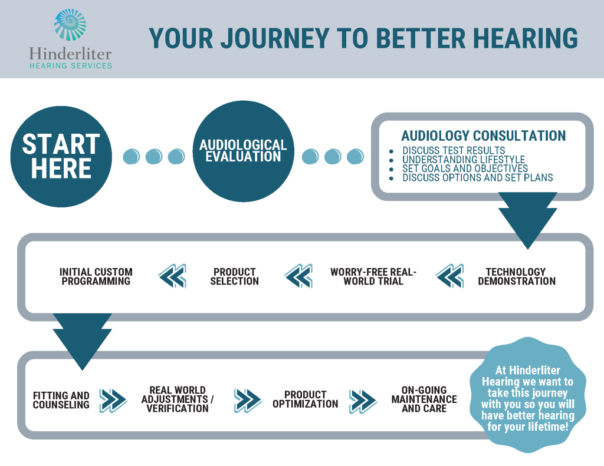

Our Services
From diagnostic testing to advanced hearing aids and ongoing support — we provide personalized care at every step.
Diagnostic Testing
A hearing test is the first step toward better hearing. Our comprehensive evaluations help us understand your unique hearing profile and determine the best course of action.
Why get a hearing test? Hearing loss often develops gradually, making it difficult to notice on your own. Regular hearing evaluations can detect changes early, when treatment is most effective.
When should you get tested? If you're over 50, experience difficulty following conversations, frequently ask others to repeat themselves, or need to turn up the TV volume higher than others prefer.
Hearing Aid Solutions
Modern hearing aids are sophisticated devices that can dramatically improve your hearing and quality of life.
A hearing aid consists of three main components: a microphone that picks up sound, a processor that amplifies and adjusts the signal, and a receiver (speaker) that delivers the enhanced sound to your ear. Today's hearing aids use advanced digital processing to provide clear, natural sound.
Hearing aids typically last 3–5 years with proper care and maintenance.

We offer a range of styles to fit your hearing needs, lifestyle, and preferences.

Sits behind the ear with a tube connecting to an ear mold. Suitable for most types of hearing loss. Durable and easy to handle.

Similar to BTE but with the receiver placed directly in the ear canal for a more natural sound. Smaller and more discreet.

Custom-molded to fit within the outer ear. Easy to insert and remove. Available in different sizes including ITC, CIC, and extended wear options.
Smaller than ITE, fits partly in the ear canal. Less visible while still being easy to use.
Fits entirely inside the ear canal for near-invisible wear. Best for mild to moderate hearing loss.
Worn continuously for weeks or months at a time. Placed deep in the ear canal by your audiologist.
Understanding Hearing Loss
Hearing loss affects millions of people and can occur at any age. Understanding the type and cause of your hearing loss is the first step toward finding an effective solution.
Caused by problems in the outer or middle ear that prevent sound from reaching the inner ear. Often treatable with medical intervention or hearing aids.
The most common type, caused by damage to the inner ear or auditory nerve. Usually permanent but can be effectively managed with hearing aids.
A combination of conductive and sensorineural hearing loss affecting both the outer/middle ear and the inner ear.

Procrastination can make hearing loss worse. When your brain doesn't receive adequate sound stimulation, it begins to lose its ability to process speech and other sounds — a phenomenon known as auditory deprivation.
Research has linked untreated hearing loss to increased risk of cognitive decline, dementia, social isolation, depression, and falls. The sooner you address hearing changes, the better the outcomes.
Schedule a Hearing TestTinnitus Treatment
Tinnitus — the perception of ringing, buzzing, hissing, or other sounds when no external sound is present — affects millions of Americans. While there is no single cure, there are effective management strategies.
What causes tinnitus? Tinnitus can be caused by noise exposure, age-related hearing loss, ear infections, circulatory issues, medications, and other factors. A thorough evaluation can help identify contributing causes.
Additional Services
Expert repair and maintenance services to keep your hearing aids working at their best.
Custom hearing protection for musicians, hunters, industrial workers, and anyone exposed to loud environments.
Custom-fitted ear molds for hearing aids, hearing protection, swimmers, and other specialized needs.
Safe, professional earwax removal to improve hearing and ear health.
Your Journey
From your first visit to years of follow-up care, we guide you every step of the way.

Schedule a comprehensive hearing evaluation with our caring team today.